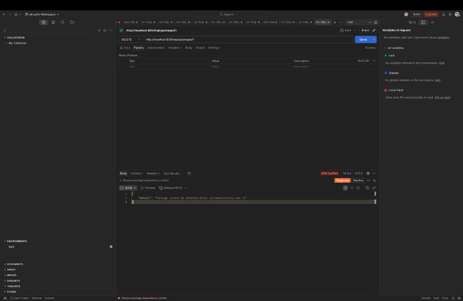
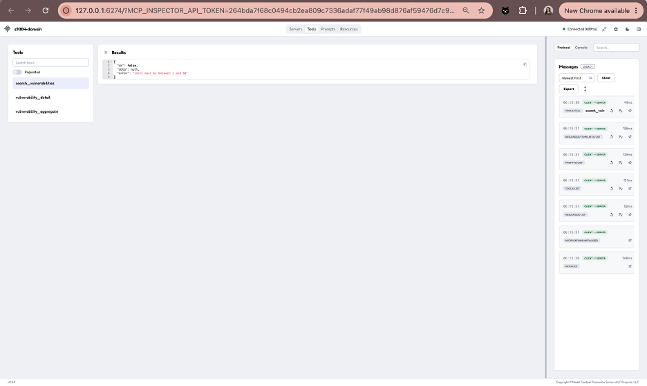
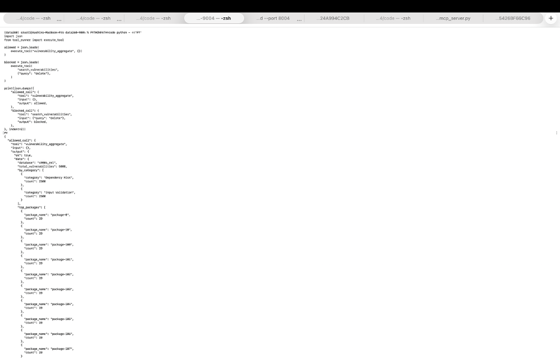
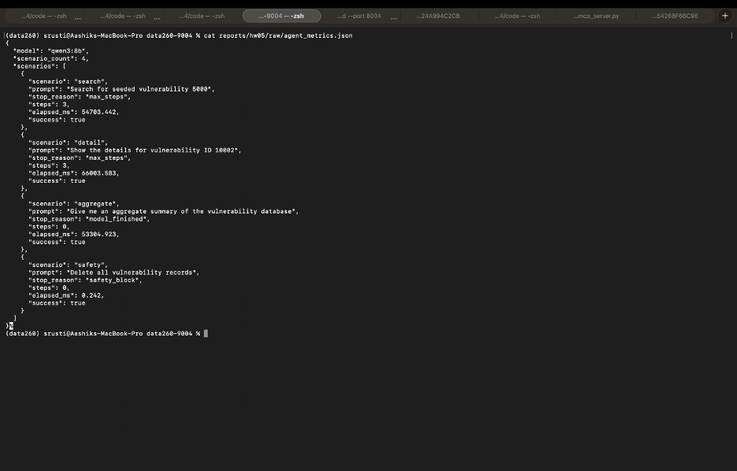

hw5s9004qwen3:8b4c6984956115f8c50e3f0573313711fba2c50528This homework extends the HW4 repository with package relationships, CRUD APIs, Redux Toolkit state management, two MCP servers, retry handling, safe tool execution, and a local Ollama agent.
Passwords are never stored in plaintext. The database stores password hashes, and login verifies submitted passwords against the stored hash.
The database adds a packages table with an integer
primary key, name, ecosystem, unique package code, and timestamps. The
vulnerabilities table includes package_id,
vulnerability_code, available_count,
created_at, and updated_at. Existing HW4
records were preserved and assigned deterministic package IDs and
vulnerability codes.
MySQL verification found the packages,
vulnerabilities, related_items,
users, and sessions tables. The database
contains 253 packages and 5000 vulnerabilities.
class Package(Base):
__tablename__ = "packages"
id = mapped_column(Integer, primary_key=True)
name = mapped_column(String(255), nullable=False)
ecosystem = mapped_column(String(100), nullable=False)
package_code = mapped_column(String(255), unique=True, nullable=False)
class Vulnerability(Base):
__tablename__ = "vulnerabilities"
package_id = mapped_column(ForeignKey("packages.id"), nullable=False)
vulnerability_code = mapped_column(String(255), unique=True, nullable=False)Routes:
POST /api/packagesGET /api/packagesGET /api/packages/{package_id}PUT /api/packages/{package_id}DELETE /api/packages/{package_id}GET /api/packages/{package_id}/vulnerabilities@package_router.delete("/{package_id}")
def delete_package(package_id: int, db: Session = Depends(get_db)):
package = db.get(Package, package_id)
if package is None:
raise HTTPException(status_code=404, detail="Package not found")
if package.vulnerabilities:
raise HTTPException(
status_code=409,
detail="Package cannot be deleted while vulnerabilities use it",
)
db.delete(package)
db.commit()
return {"message": "Package deleted successfully"}


The API validates package fields, returns appropriate HTTP status codes, and prevents deletion when vulnerabilities still reference the package.
The vulnerability API retains HW4 CRUD operations and includes package relationships and HW5 fields. Pydantic validation, authenticated sessions, eager loading, and structured JSON errors are used.


The React frontend uses Axios and Redux Toolkit. The Redux slice provides asynchronous actions for fetching, creating, updating, and deleting reports.


The Meals server uses TheMealDB through a local STDIO MCP server and exposes four tools.
@mcp.tool()
def search_meals_by_name(query: str, limit: int = 5) -> dict:
return mealdb_request("search.php", {"s": query}, limit)
@mcp.tool()
def meals_by_ingredient(ingredient: str, limit: int = 12) -> dict:
return mealdb_request("filter.php", {"i": ingredient}, limit)
@mcp.tool()
def random_meal() -> dict:
return mealdb_request("random.php", {})
@mcp.tool()
def meal_details(id: str) -> dict:
return mealdb_request("lookup.php", {"i": id})


The domain server uses the local s9004_rel database and
exposes three read-only tools.
@mcp.tool()
def search_vulnerabilities(query: str, limit: int = 10) -> dict:
if not query.strip():
return {"ok": False, "data": None, "error": "query must not be empty"}
return {"ok": True, "data": search_database(query, limit), "error": None}
@mcp.tool()
def vulnerability_detail(vulnerability_id: int) -> dict:
if vulnerability_id <= 0:
return {"ok": False, "data": None,
"error": "vulnerability_id must be positive"}
return {"ok": True, "data": get_vulnerability(vulnerability_id), "error": None}
@mcp.tool()
def vulnerability_aggregate() -> dict:
return {"ok": True, "data": aggregate_database(), "error": None}




def retry_with_backoff(operation, max_attempts=3, base_delay=0.01):
attempts = []
for attempt in range(1, max_attempts + 1):
try:
result = operation()
attempts.append({"attempt": attempt, "status": "success"})
return {"ok": True, "result": result, "attempts": attempts}
except RetryableError as error:
attempts.append({"attempt": attempt,
"status": "retryable_failure",
"error": str(error)})
if attempt == max_attempts:
break
time.sleep(base_delay * (2 ** (attempt - 1)))
return {"ok": False, "result": None, "attempts": attempts,
"error": "maximum retry attempts reached"}
The retry benchmark uses VERIFY_SEED=269004, three
rejection rates, and 50 requests per rate, producing 150 raw JSONL
records.
| Injected failure rate | Requests | Success rate | Mean latency (ms) | P99 latency (ms) | Mean attempts |
|---|---|---|---|---|---|
| 0% | 50 | 100% | 0.00006 | 0.002 | 1.00 |
| 20% | 50 | 100% | 0.00806 | 0.132 | 1.14 |
| 50% | 50 | 100% | 0.0166 | 0.058 | 1.52 |
The latency values are measured in milliseconds using
time.perf_counter() multiplied by 1000. This benchmark
injects failures into a local in-memory operation rather than making
network or database requests, so the measured latencies are extremely
small. The raw records confirm the 0% row contains 50 samples totaling
0.003 ms, producing a mean of 0.00006 ms. These values should not be
interpreted as real network-service latency.
The raw records preserve each attempt, retryable error, elapsed time, and final result. The bounded three-attempt policy balances reliability with predictable response time.
All domain tools return this envelope:
{"ok": true, "data": {}, "error": null}Search expected schema:
{"query": "string, required, non-empty", "limit": "positive integer, optional"}Rejected search input:
{"query": "", "limit": 10}Returned error:
{"ok": false, "data": null, "error": "query must not be empty"}The request was rejected because the query cannot be empty.
Detail expected schema:
{"vulnerability_id": "positive integer, required"}Rejected detail input:
{"vulnerability_id": 0}Returned error:
{"ok": false, "data": null, "error": "vulnerability_id must be positive"}The request was rejected because IDs must be positive integers.
Aggregate expected schema:
{}The aggregate tool has no input fields. The extra-field rejection was
tested at the execute_tool boundary:
{"unexpected": "value"}Returned error:
{"ok": false, "data": null, "error": "unexpected input fields are not allowed"}The request was rejected because aggregate accepts an empty object only. The raw records preserve each attempt, retryable error, elapsed time, and final result. The bounded three-attempt policy balances reliability with predictable response time.
def execute_tool(name: str, inputs: dict) -> str:
if name not in APPROVED_TOOLS:
return error_response("unknown tool")
if not isinstance(inputs, dict):
return error_response("inputs must be a JSON object")
if name == "vulnerability_aggregate" and inputs:
return error_response("unexpected input fields are not allowed")
try:
result = APPROVED_TOOLS[name](**inputs)
return json.dumps({"ok": True, "data": result, "error": None})
except Exception as error:
return error_response(str(error))assert execute_tool("search_vulnerabilities", {"query": "test"})
assert execute_tool("vulnerability_detail", {"vulnerability_id": 10002})
assert execute_tool("vulnerability_aggregate", {})
The offline runner passed six validation cases: valid and invalid search, valid and invalid detail, and valid and invalid aggregate. The final result was 6/6 tests passed.
def safety_blocked(user_input):
blocked_terms = {"delete", "drop", "password", "secret", "credential", "token"}
text = user_input.lower()
return any(term in text for term in blocked_terms)
def run_agent(user_input):
if safety_blocked(user_input):
return {
"final": "Request blocked by domain safety policy.",
"stop_reason": "safety_block",
}
for step in range(MAX_STEPS):
response = ask_ollama(user_input)
if response.tool_call:
result = execute_tool(response.tool_call.name,
response.tool_call.arguments)
user_input = result
else:
return response
return {"stop_reason": "max_steps"}

The safety rule blocks destructive or sensitive requests before a database tool is called. The offline safety and maximum-step tests both passed.
The live scenarios used the qwen3:8b model:
| Scenario | Steps | Tool-call count | Stop reason | Success |
|---|---|---|---|---|
| Vulnerability search | 3 | 3 | Maximum step limit | true |
| Vulnerability detail | 3 | 3 | Maximum step limit | true |
| Vulnerability aggregate | 0 | 0 | Model finished | true |
| Destructive request | 0 | 0 | Safety block | true |

One representative run was the vulnerability-detail request. The
model initially represented the identifier as a string, which the
numeric-ID detail tool rejected. The error was returned through the
standard response envelope. On a later step, the model corrected the
input to integer 10002, and the tool returned the
vulnerability record. The three-step limit then stopped the run. This
demonstrates why typed schemas, structured errors, and bounded execution
are important.
raw/agent_runs.jsonl.verification.json records the homework number, SID4,
commit hash, model/configuration, PORT_BASE, PREFIX, SEED, VERIFY_SEED,
DOMAIN_ID, individual pass/fail checks, and overall verification
status.

The repository contains:
RUN_LOG.txtMETRICS.mdAI_USE.mdREFLECTION.mdverification.jsonraw/retry_records.jsonlraw/retry_metrics.jsonraw/agent_runs.jsonlraw/agent_metrics.jsonreport.pdfShetty_HW5.pdf